xx
xxxx xx xxxx xxxxx xxxx
xx xx xx xx xx xx xx xx
xxxx xx xx xxxx xx xx xx xx xxxx xx xxxx
xx xx xx xx xx xx xx xx xx xx xx
xx xx xx xx xx xxxxx xx xx xx xx
xxxxx xx xx xx xx xx xx xxxxx xx xxxxxx
xx xx xx xx xx xx xx xx xx xx xx xx xx
xx xx xx xx xx xx xx xx xx xx xx xx xx xx
xxxxx xxxx xxxxxx xxxx xxxxx xxxxx xxxx xxxx
H o M e P a G e
Muitos estudiosos já pesquisaram a influência dos jogos na sociedade em que vivemos, mas foi o historiador Johan Huizinga, autor do livro Homo ludens (Homem lúdico), quem melhor explicou esse fenômeno: longe de ser apenas uma entre outras atividades da vida civilizada, o jogo se encontra na própria raiz da cultura e é mais antigo que ela.
Assim, jogamos ou competimos por algo mais que a honra ou um prêmio material. A essência do espírito lúdico, segundo Huizinga, é ousar, correr riscos, superar a incerteza, descarregar a tensão, relaxar. Para os humanos, o jogo ultrapassa os limites de uma atividade puramente física, transcende as necessidades práticas da vida cotidiana.
Mexendo em seu microcomputador, meio de brincadeira, um jovem gênio da informática, descobre como entrar em contato com os computadores do serviço de Defesa norte-americana e, para desespero dos generais, interfere justamente no código que revela como enfrentar os soviéticos em possível guerra nuclear.
Este é o tema do filme Jogos de Guerra (Wargames). Baseada na enorme difusão dos jogos eletrônicos de computador e na crescente sofisticação dos micros, a história mostra a correlação entre a atividade lúdica, o faz-de-conta e a vida real.
Para explicar melhor o que são os jogos do tipo adventure (aventura), poderemos compará-los a filmes. Quando você assiste um filme, você vê a visão linear da história contada pelo diretor, já quando você joga um adventure, você cria a sequencia da história interagindo com os personagens do jogo através de comandos pré-definidos. O que difere os adventures dos jogos do tipo RPG, e o fato que no adventure, você dá as instruções para um personagem realizar determinada tarefa enquanto no RPG, você e o personagem do jogo.
Antigamente os jogos do tipo adventure utilizavam-se apenas de textos para descrever os cenários e as histórias, já hoje em dia utilizam a tecnologia das placas aceleradoras 3D. Irei dar uma mostra da evolução que os jogos adventure vêm sofrendo nos últimos anos.
Adventures Texto - Estes jogos normalmente eram desenvolvidos por universitários e hobbystas de programação, e eram feitos aos milhares, pois sua programação era relativamente fácil, e a única coisa realmente necessária era um bom roteiro.
The Hobbit - Foi um dos primeiros adventures gráficos existentes. Foi lancado para TK95 e contava uma história de J.R.R. Tolkien (autor de o Senhor dos Anéis) onde o personagem principal (Bilbo) fazia uma viagem ao centro da terra para encontrar um drag&ailde;o e um tesouro. As ações eram fornecidas através do teclado sempre na forma "VERBO+OBJETO" da seguinte maneira: PEGAR ANEL, ABRIR PORTA, IR NORTE, etc...
Maniac Mansion - Na minha opinião foi o mais revolucionador dos adventures, era gráfico, e as ações eram selecionadas através de um painel que poderia ser ativado por um mouse ou atrav&eacue;s de atalhos do teclado. Foi adaptado para consoles de videogames e para diversas plataformas de computador.
Indiana Jones and the Fate of Atlantis - A história desse jogo seria na verdade mais uma continuação da série de filmes do explorador Indiana Jones, mas por falta de produtores ele foi produzido como um jogo adventure.
Sam & Max - Deixou de usar as ações selecionadas através de um painel e as substituiu por comandos de mouse.
The Dig - A história desse jogo foi criada por nada menos que Steven Spielberg, e foi lançdo apenas para computador pois os seus altos custos inviabilizaram a sua produção para o cinema.
Monkey Island III - Inovador apenas no aspecto da computação gráfica, iniciou o uso de tela cheia para os gráficos dos jogos. Foi também a terceira continuação da mais bem-sucedida série de adventures da Lucasart.
Grim Fandango - O primeiro adventure a se utilizar dos recursos proporcionados pelas placas aceleradoras 3D conta uma lenda mexicana. Também foi produzido pela Lucasart.
Decidi dedicar uma parte desse livro para falar sobre essa que considero a melhor produtora de jogos adventure do momento. Deixarei que seu histórico produções mostre o porque disso.
Com um curriculo desse é necessário dizer algo mais?
Ultimamente a produção de adventure, ou melhor, de todos os tipos de jogos no Brasil anda meio devagar, mesmo vendo esforços de alguns grupos e empresas que ainda se dedicam a essa arte. O último adventure nacional lançado no mercado na década de 80 foi Amaz^ocirc;nia de Renato Degiovani. Ele foi produzido quando ainda existiam programadores nacionais que produziam software de qualidade e que faziam isso muitas vezes por amor à arte e não pra engordar seus cofrinhos. Os jogos nacionais de maior import^acirc;ncia foram:
Terminar
Nessa parte do livro, descreverei detalhadamente todos os processos necessários na criação de um adventure. Dividi essa parte do livro em fases para facilitar a compreensão de tudo o que é necessário para se desenhar bons jogos. É claro que, dependendo do tamanho do jogo, poderemos pular determinadas etapas desse processo, mas recomendo que elas sejam seguidas uma a uma sem atropelos, para que seu jogo fique bem estruturado.
Isso tudo é necessário, porque é daí que inicia (muitas vezes sem querer), a próxima etapa da construção de um jogo: a Idéia. Sabendo sobre muito sobre essas coisas, você estará criando possibilidades para que as boas idéias cheguem.
No Apendice A coloquei algumas dicas para se obter informações sobre os itens acima citados.
Essa sem dúvida é a parte mais importante na criação de um jogo. Todo bom jogo começa com uma boa idéia, mas isso não quer dizer que boas idéias sempre se transformem em bons jogos. Tudo vai depender da maneira de como iremos trabalhar essas idéias nas estapas seguintes.
Certas idéias irão demandar também um certo trabalho de pesquisa. Como é o caso de jogos que acontecem em períodos históricos, ou que se utilizem de lendas de uma determinada civilização. Os métodos de pesquisa devem explorar os mais diversos aspectos que possam ser usados em seu jogo. Como exemplo poderiamos estar criando um jogo do tipo adventure que se passe na época do antigo egito, saberemos que não seria uma boa idéia colocar um gato sendo morto, pois os gatos eram animais sagrados para essa civilização.
Se estivermos escrevendo um roteiro de uma aventura passada no futuro, poderemos colher idéias em filmes, livros ou até mesmo pela TV. Já se estivermos escrevendo uma aventura no espaço poderemos fazer uma pesquisa científica, para que detalhes como a falta de gravidade e o vácuo não fiquem de fora das ações de nossos personagens.
Ao mesmo tempo, também não devemos ficar amarrados a certos detalhes do tipo: o som não se propaga no vazio do espaço, porque senão os lasers de nossas naves não irão emitir ruído algum, e isso realmente tornaria o jogo um pouco chato.
Sempre que tiver uma boa idéia para um jogo, anote-a rapidamente num pedaço de papel para que todos os detalhes dela ainda estejam vivos em sua memória.
Na concepção do jogo, definiremos como nosso jogo ficará no computador. Portanto é aqui que vamos ver o tipo de jogo e a ambientação que ele terá.
Tipos de jogos
Tendo em mãos todas essas informações podemos definir como ficará nosso jogo.
Neste ponto teremos em mãos: Uma idéia (que pode estar numa sinopse básica), materiais de pesquisa necessários e uma visão geral de como o jogo irá ficar quando pronto. Devemos agora partir para o detalhamento dessas informações, e no caso de alguns jogos (como o adventure por exemplo) a elaboração dos roteiros.
Evidentemente se nosso jogo for apenas um jogo da velha ou um jogo simples de tabuleiro, não é necessário uma roteirização, pois já se conhece regras e funcionamento dos mesmos. Agora se seu jogo da velha for trabalhar com IA (Inteligência Artificial) a situação muda, e um projeto bem feito pode lhe poupar muito trabalho no futuro.
Roteirização Básica
Chegou a hora de você contar toda a sua história, de maneira simples. Nessa etapa não é necessário descrever como ficará o jogo em detalhes, mas é necessário que façamos as separações de fase, a história da aventura. Aqui também entra a descrição de todos os personagens da história. Escreva essa parte como se estivesse escrevendo um conto (ou um best-seller se preferir). Descrições detalhadas de personagens, cenários, cenas e diálogos não entram nesse roteiro porque farão parte do roteiro detalhado.
Depois de pronta essa roteirização o próximo passo é entregá-lo a algum amigo, parente ou pai para que eles dêem uma lida e opinem sobre os diversos aspectos da história. Depois que você recolher diversas opiniões, deverá então partir para a revisão do roteiro onde as falhas deverão ser corrigidas.
Definição Básica de Personagens
Aqui deveremos criar a "personalidade" de nossos personagens. Utilizarei aqui as siglas PC e NPC que significam respectivamente Player Character (Personagem Jogador) e Non-player Character (Personagem não jogador). Essas siglas foram herdadas dos Jogos de RPG. Os PC's são os personagens que são controlados (ou no caso do RPG interpretados) pelo jogador, enquanto os NPC's são controlados pelo computador (ou pelo mestre de jogos no caso do RPG).
Devemos descrever, nessa etapa da criação do adventure, como cada um dos personagens se apresentará em nossa história e como ele se comportaria em determinadas situações. Exemplo:
Para facilitar podemos criar algumas fichas de personagens. Nessas fichas você pode designar atributos básicos como Força, Inteligência, Vitalidade, Sorte, Destreza e algumas peculiaridades. É claro que um desenho do mesmo ajudará.
Roteirização Avançada
Terminada a roteirização básica, começaremos a roteirização avançada. Esse roteiro incluirá as descrições de cenários, as falas dos personagens, a ambientação das cenas, entre outras informações mais detalhadas. Para auxiliar nessa fase temos uma ferramenta muito interessante utilizada por produtores de vídeo que se chama Storyboard.
| 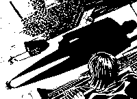 | 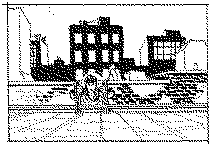 | |
| 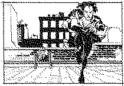 | 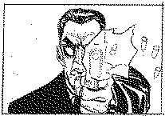 | 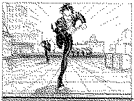 |
| 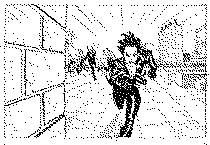 | 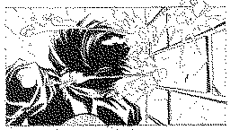 | 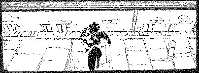 |
| 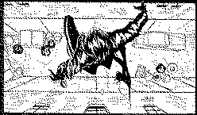 |
O Storyboard nada mais é do que uma história em quadrinhos com as cenas do seu jogo. Através desses desenhos você terá uma visão muito mais detalhada de como o jogo será feito, e dados como posicionamento de câmeras, posição dos personagens, sequências de animação e até mesmo alguns diálogos.
Essa parte do projeto é meio mecânica e braçal, mas é também fundamental para uma boa se ter uma idéia do que será necessário fazer na próxima etapa da criação do jogo. Documentação técnica
A documentação técnica necessária nessa parte, consiste em fluxograma da história, banco de diálogos e mapa de cenários.
| 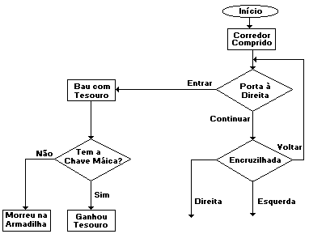 | Fluxograma da história - A melhor coisa dos jogos para computador, sem dúvida é a possibilidade do jogador interagir com a história. Isso permite que a história não tenha só o fluxo linear de acontecimentos (começo/meio/fim). Para esses casos, onde o jogo não segue um fluxo linear, às vezes torna-se necessário um a criação de um fluxograma, para que possamos saber se nosso roteiro não tem alguma falha que tenha passado pela revisão de roteiro básico, ou para nos ajudar na fase de codificação da aventura. |
| Banco de Diálogos - Tendo o roteiro avançado em mãos, deveremos anotar todos as falas de todos os personagens em um banco de diálogos. Isso nos ajudará a desenvolver o jogo e evitará que diálogos redundantes ocupe memória do computador. Ajudará também no caso de nosso jogo precisar ser traduzido para outros idiomas. Todo tipo de texto deverá ser colocado aqui e na codificação, deveremos nos referenciar ao código do diálogo para imprimir os textos na tela. Podemos colocar nesse banco de dados as falas digitalizadas dos personagens caso seu jogo seja dublado. |
| 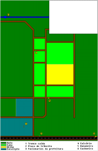 | Mapa de Cenários - Em determinados jogos, o roteiro não passa de um mapa de cenários. Isso mostra a importância dessa documentação em qualquer jogo. Se seu jogo for um adventure, esse mapa mostrará qual sala levará a qual sala. |
Terminado tudo isso, se você ainda não estiver louco e com pilhas de papéis monstruosas poderemos partir para a próxima etapa: o Projeto.
Gráficos
Os ilustradores agora terão um trabalhão pela frente. De posse de toda a papelada de roteiros, rascunhos de cenários, personagens e começa a desenhar o jogo e criar as animações.
| 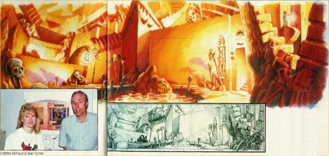 |
| Ilustração usada na criação do jogo Monkey Island II |
Os métodos para isso variam de acordo como o ilustrador, mas o processo mais utilizado hoje em dia, consiste em criar o traçado da arte no papel, digitalizar (ou scannear como preferir) e colorir no computador. Já as animações serão feitas quadro a quadro utilizando uma ferramenta de animação, ou digitalizando-as uma a uma manualmente.
| 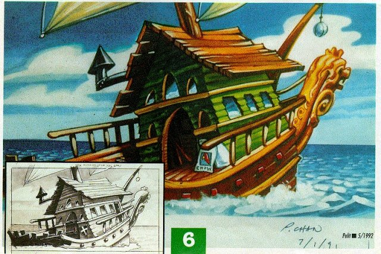 |
| Ilustração usada na criação do jogo Monkey Island II |
As ferramentas de animação (cell animation) são poucas e caras, devido a isso, muitas vezes a animação manual torna-se mais viável economicamente.
Para jogos em 3D, o ilustrador dispõe de mais ferramentas para a criação de animações e cenários. E o projeto já pode ser feito diretamente na máquina.
colocar imagem do criador de fase do Descent
Os ilustradores deverão nessa etapa criar todos os cenário, animações, personagens e movimento de personagens utilizados em todo o jogo. As imagens deverão seguir algumas instruções dos programadores do projetos. Essas especificações deverão incluir: Paleta, Cores, Tamanho da imagens entre outras. Se a equipe de programadores já desenvolveu alguma ferramenta para esse trabalho, essas deverão ser usadas.
Sons
O som de um jogo de computador divide-se em 2 ou 3 partes dependendo do tipo do jogo. São elas:
Se a equipe de desenvolvimento já tiver uma ferramenta de criação de sons, essa deverá ser usada.
Programação
Os programadores ainda não estarão criando o jogo propriamente dito nessa etapa. Eles estarão ocupados em desenvolver as ferramentas para os músicos e os artistas gráficos utilizarem em seu trabalho.
Eles também já estarão desenvolvento formatos e estruturas de arquivo para as imagens e sons.
Defino essa fase como "Ponto sem volta", porque só os loucos (por jogos) chegam até o fim dessa etapa. E se chegaram até aqui e não ficaram com nenhuma sequela por isso, só nos resta prosseguir. É nessa hora que você pergunta: "Porque que eu não fiquei apenas jogando???".
À partir daqui poderemos apenas andar pra frente, porque já passamos do meio, e voltar agora significa andar muito mais. E se todos os participantes do projeto já passaram por todas as brigas e discussões, falta apenas uma coisa: terminar.
Engenharia Software
Nessa fase, vamos carpir a grama, nivelar o terreno e contruir os alicerces para os programadores entrarem em ação.
Aqui nós temos que nos preocupar com a implementação de todas as informações que temos para a linguagem do computador. Iremos discutir um a um os seguintes tópicos: Gráficos, Som e Textos.
Gráficos
Precisaremos definir formatos de gráficos para o nosso jogo. Nos jogos de computador, temos diversas maneira de trabalhar com imagens. Entre os métodos utilizados para a geração de imagens na tela do computador podemos enumerar os seguintes:
Exitem outras dezenas de técnicas para a utilização de gráficos para computador, mas muitas delas tratam apenas de implementações mais eficientes ou variações dessas descritas acima.
Sons Existem algumas técnicas para a sincronização da trilha sonora com os eventos ocorridos durante o jogo. Esse detalhe que parece bobo, é muito utilizado quando, por exemplo, queremos causar algum suspense numa determinada cena. Uma técnica interessante que vem se utilizando principalmente em jogos 3D é o som 3D, que faz com que o jogador possa distinguir a posição de onde vem os ruídos (do inimigo por exemplo).
Textos
Defini essa parte como texto, mas ela abrange muito mais do que isso, ela abrange também a forma como seu jogo vai se comportar aos comandos do jogador, como será sua estrutura de comandos, como funcionara o seu jogo.